Complete the tasks below. Make sure to start your solutions in on a new line that starts with “Solution:”.
Make sure to use the Quarto Cheatsheet. This will make completing and writing up the lab much easier.
Make sure to use “enter” to make your code readable, so it doesn’t run off the page. I switched the Quarto document to automatically render to .pdf, so you can see what you’re submitting by default. You can switch back for the highlighting by moving the html block above the pdf block in the YAML header.
Don’t forget that you can copy-and-paste code when you’re doing something similar as we did in class!
Make sure to plot all computed probabilities. This is good ggplot practice AND will help make sure you don’t make a mistake when computing the probability.
1 Introduction
When performing point estimation, there isn’t just one right answer. For example, the Method of Moments (MOM) and Maximum Likelihood Estimates (MLEs) aren’t always the same.
One question that comes up, is why we calculate the sample variance as \[S_{n-1}^2 = \frac{1}{n-1} \sum_{i=1}^n (X_i -\bar{X})^2,\] when it is supposed to be the ``average squared distance from the mean, i.e., \[S_n^2 = \frac{1}{n} \sum_{i=1}^n (X_i -\bar{X})^2.\]
2 Comparing Estimators
2.1 Initial Simulation
In this lab, we will explore why we use \(S_{n-1}^2\) and not \(S_n^2\). To do this, we will generate data from four known distributions:
Remark: Note that I have selected the parameters so that the true variance for all four models is 2.
For each distribution, write a loop that completes the following 1000 times. Put set.seed(7272) at the top of your code chunk.
Generate a sample of size \(n\) from the distribution.
Calculate and save \(S_{n-1}^2\) and \(S_n^2.\)
Start with \(n=20\). Is there evidence that \(S_{n-1}^2\) is a better estimator than \(S_n^2\)?
Solution
Code
set.seed(7272)n =20n.sims=1000# Poisson lambda =2results_p =tibble(var=numeric(n.sims), not_var=numeric(n.sims))for(i in1:n.sims){ x =rpois(n, lambda) (results_p$var[i] =var(x) ) # variance (results_p$not_var[i] = (n-1)/n *var(x)) # the not variance - avg. squared dist from mean}means_p =tibble(var_mean =mean(results_p$var), not_var_mean =mean(results_p$not_var))# Binomialsize =50p = (5-sqrt(21))/10results_b =tibble(var=numeric(n.sims), not_var=numeric(n.sims))for(i in1:n.sims){ x =rbinom(n, size, p) (results_b$var[i] =var(x) ) # variance (results_b$not_var[i] = (n-1)/n *var(x)) # the not variance - avg. squared dist from mean}means_b =tibble(var_mean =mean(results_b$var), not_var_mean =mean(results_b$not_var))# Normalmean =0sd =sqrt(2)results_n =tibble(var=numeric(n.sims), not_var=numeric(n.sims))for(i in1:n.sims){ x =rnorm(n, mean, sd) (results_n$var[i] =var(x) ) # variance (results_n$not_var[i] = (n-1)/n *var(x)) # the not variance - avg. squared dist from mean}means_n =tibble(var_mean =mean(results_n$var), not_var_mean =mean(results_n$not_var))# Exponentiallambda =1/sqrt(2)results_e =tibble(var=numeric(n.sims), not_var=numeric(n.sims))for(i in1:n.sims){ x =rexp(n, lambda) (results_e$var[i] =var(x) ) # variance (results_e$not_var[i] = (n-1)/n *var(x)) # the "not" variance - avg. squared dist from mean}means_e =tibble(var_mean =mean(results_e$var), not_var_mean =mean(results_e$not_var))
Since we know the true variance of all the models is 2, we can compare the accuracy of the calculated variance and the calculated “not-variance” by seeing how close they are to 2. For every model, at n=20, the variance is closer to 2 than the “not-variance”, which shows that it is a better estimator.
Create a plot or combination of plots (using patchwork) to show the results across all four distributions. Make sure to create a corresponding table that numerically summarizes the results of the simulation. You should include \[\begin{align*}
\textrm{Bias} &= \textrm{Average of Estimates} - \textrm{True Value}\\
\textrm{Precision} &= \frac{1}{\textrm{Variance of Estimates}}\\
\textrm{Mean Square Error} &= \textrm{Bias}^2 + \textrm{Variance of Estimates}.
\end{align*}\]
Table 1: Different properties of the distributions
Distribution
var_mse
var_notmse
varbias
notvarbias
var_prec
notvar_prec
var_mean
not_var_mean
Poisson
0.66
0.44
-0.02
-0.12
2.10
2.33
1.98
1.88
Binomial
0.64
0.44
-0.04
-0.13
2.15
2.38
1.96
1.87
Normal
0.49
0.45
0.00
-0.10
2.03
2.25
2.00
1.90
Exponential
1.43
1.30
-0.02
-0.12
0.70
0.77
1.98
1.88
Code
poisson_var =ggplot(results_p) +geom_boxplot(aes(x="", y = var), width=.1) +geom_hline(yintercept =2, color ="red") +theme_bw() +labs(x ="", y="Variance", title ="Variance estimator")poisson_notvar =ggplot(results_p) +geom_boxplot(aes(x="", y = not_var), width=.1) +geom_hline(yintercept =2, color ="red") +theme_bw() +labs(x ="", y="Variance", title ="'Not-variance' estimator")
Code
poisson_var + poisson_notvar
Figure 1: Boxplots comparing the variances of the two estimators for variance, with data from the Poisson distribution
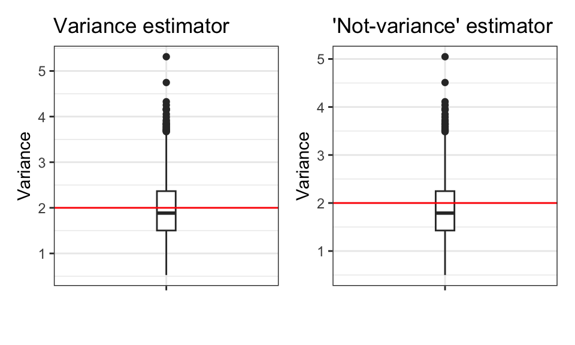
Code
binom_var =ggplot(results_b) +geom_boxplot(aes(x="", y = var), width=.1) +geom_hline(yintercept =2, color ="red") +theme_bw() +labs(x ="", y="Variance", title ="Variance estimator")binom_notvar =ggplot(results_b) +geom_boxplot(aes(x="", y = not_var), width=.1) +geom_hline(yintercept =2, color ="red") +theme_bw() +labs(x ="", y="Variance", title ="'Not-variance' estimator")
Code
binom_var + binom_notvar
Figure 2: Boxplots comparing the variances of the two estimators for variance, with data from the Binomial distribution
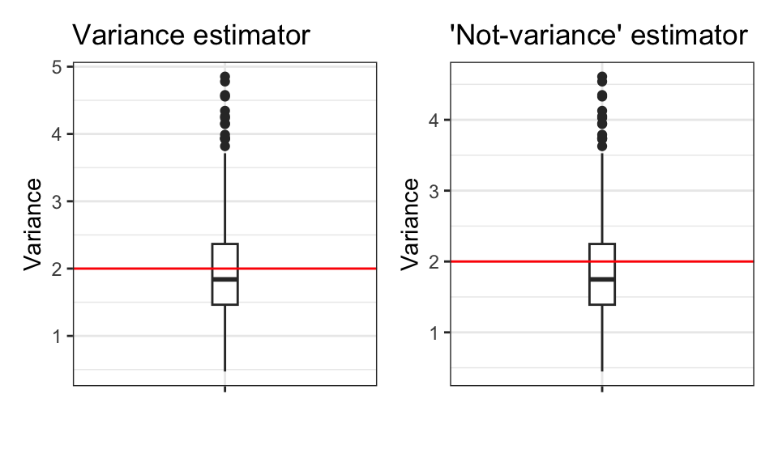
Code
norm_var =ggplot(results_n) +geom_boxplot(aes(x="", y = var), width=.1) +geom_hline(yintercept =2, color ="red") +theme_bw() +labs(x ="", y="Variance", title ="Variance estimator")norm_notvar =ggplot(results_n) +geom_boxplot(aes(x="", y = not_var), width=.1) +geom_hline(yintercept =2, color ="red") +theme_bw() +labs(x ="", y="Variance", title ="'Not-variance' estimator")
Code
norm_var + norm_notvar
Figure 3: Boxplots comparing the variances of the two estimators for variance, with data from the Normal distribution
Code
exp_var =ggplot(results_n) +geom_boxplot(aes(x="", y = var), width=.1) +geom_hline(yintercept =2, color ="red") +theme_bw() +labs(x ="", y="Variance", title ="Variance estimator")exp_notvar =ggplot(results_n) +geom_boxplot(aes(x="", y = not_var), width=.1) +geom_hline(yintercept =2, color ="red") +theme_bw() +labs(x ="", y="Variance", title ="'Not-variance' estimator")
Code
exp_var + exp_notvar
Figure 4: Boxplots comparing the variances of the two estimators for variance, with data from the Exponential distribution
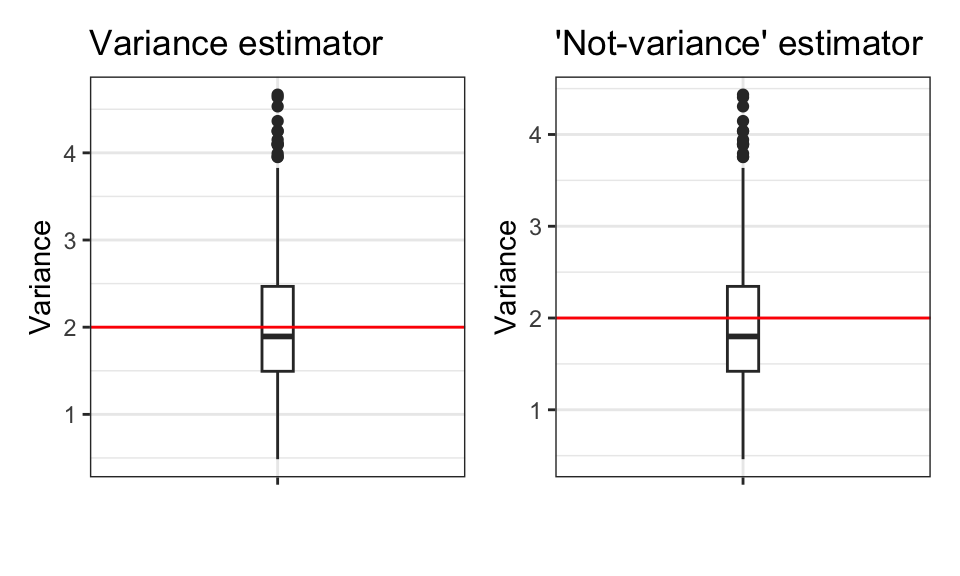
2.2 Simulation over various sample sizes
Consider the effect of the sample size have on these results. Provide a graphical and numerical summary of what happens as \(n\) increases – say \(n=20\), \(n=50\), \(n=100\), and \(n=500\). Does the result in your initial simulation hold across samples? Or, do things change as the sample size changes? Ensure to set your randomization seed.
Solution
Here, I reuse my original code, and change n to 50.
Table 4: Different properties of the distributions
Distribution
var_mse
var_notmse
varbias
notvarbias
var_prec
notvar_prec
var_mean
not_var_mean
Poisson
0.02
0.02
0
-0.01
50.32
50.52
2
1.99
Binomial
0.02
0.02
0
-0.01
55.41
55.63
2
1.99
Normal
0.02
0.02
0
0.00
58.58
58.81
2
2.00
Exponential
0.06
0.06
0
0.00
15.71
15.77
2
2.00
Code
poisson_var =ggplot(results_p) +geom_boxplot(aes(x="", y = var), width=.1) +geom_hline(yintercept =2, color ="red") +theme_bw() +labs(x ="", y="Variance", title ="Variance estimator")poisson_notvar =ggplot(results_p) +geom_boxplot(aes(x="", y = not_var), width=.1) +geom_hline(yintercept =2, color ="red") +theme_bw() +labs(x ="", y="Variance", title ="'Not-variance' estimator")
Code
poisson_var + poisson_notvar
Figure 13: Boxplots comparing the variances of the two estimators for variance, with data from the Poisson distribution, when n = 500
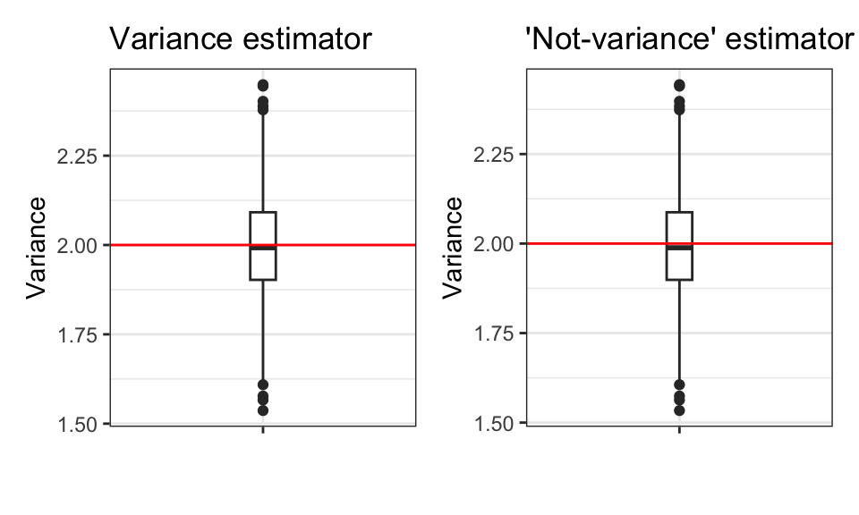
Code
binom_var =ggplot(results_b) +geom_boxplot(aes(x="", y = var), width=.1) +geom_hline(yintercept =2, color ="red") +theme_bw() +labs(x ="", y="Variance", title ="Variance estimator")binom_notvar =ggplot(results_b) +geom_boxplot(aes(x="", y = not_var), width=.1) +geom_hline(yintercept =2, color ="red") +theme_bw() +labs(x ="", y="Variance", title ="'Not-variance' estimator")
Code
binom_var + binom_notvar
Figure 14: Boxplots comparing the variances of the two estimators for variance, with data from the Binomial distribution, when n = 500
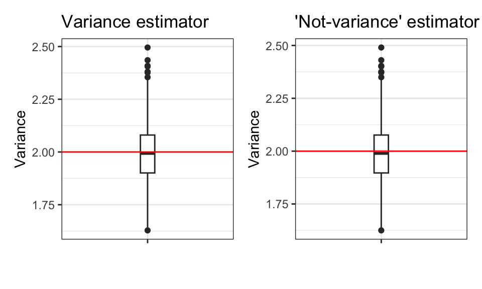
Code
norm_var =ggplot(results_n) +geom_boxplot(aes(x="", y = var), width=.1) +geom_hline(yintercept =2, color ="red") +theme_bw() +labs(x ="", y="Variance", title ="Variance estimator")norm_notvar =ggplot(results_n) +geom_boxplot(aes(x="", y = not_var), width=.1) +geom_hline(yintercept =2, color ="red") +theme_bw() +labs(x ="", y="Variance", title ="'Not-variance' estimator")
Code
norm_var + norm_notvar
Figure 15: Boxplots comparing the variances of the two estimators for variance, with data from the Normal distribution, where n = 500
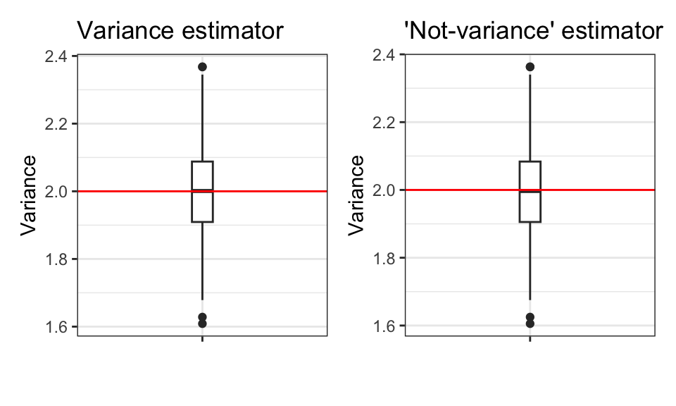
Code
exp_var =ggplot(results_n) +geom_boxplot(aes(x="", y = var), width=.1) +geom_hline(yintercept =2, color ="red") +theme_bw() +labs(x ="", y="Variance", title ="Variance estimator")exp_notvar =ggplot(results_n) +geom_boxplot(aes(x="", y = not_var), width=.1) +geom_hline(yintercept =2, color ="red") +theme_bw() +labs(x ="", y="Variance", title ="'Not-variance' estimator")
Code
exp_var + exp_notvar
Figure 16: Boxplots comparing the variances of the two estimators for variance, with data from the Exponential distribution where n = 500
Looking at the different tables produced for varying values of n, we can see that the bias and mse approaches 0 as n increases. We can also see that the mean appproaches 2, and that the precision increases as n increases. The boxplots show the same trend, which can be seen by the median approaching the true mean of 2, suggesting that as the size of the data increases, outliers have a smaller effect on the data. However, the variance is still more accurate than the “not-variance”, even at larger sample sizes, although the difference is not as large as it was at small sizes.
2.3 Simulation
You have written code to draw a random sample of various sizes from each distribution, and to calculate and store the calculated estimates. Rework your code to produce a density plot of the \(s_{n-1}^2\) and \(s_{n}^2\). Do you have a guess about their distribution? Ensure to set your randomization seed.
Solution
Code
n =20# Poisson lambda =2results_p =tibble(var=numeric(n.sims), not_var=numeric(n.sims))for(i in1:n.sims){ x =rpois(n, lambda) (results_p$var[i] =var(x) ) # variance (results_p$not_var[i] = (n-1)/n *var(x)) # the not variance - avg. squared dist from mean}
Figure 28: Density plots of the (s_n)^2 and the (s_(n-1))^2 of the Exponential distribution when n = 500
Code
n =20# normal lambda =2results_n =tibble(var=numeric(n.sims), not_var=numeric(n.sims))for(i in1:n.sims){ x =rpois(n, lambda) (results_n$var[i] =var(x) ) # variance (results_n$not_var[i] = (n-1)/n *var(x)) # the not variance - avg. squared dist from mean}
Figure 29: Density plots of the (s_n)^2 and the (s_(n-1))^2 of the Normal distribution when n = 20
Code
n =50# normal lambda =2results_n =tibble(var=numeric(n.sims), not_var=numeric(n.sims))for(i in1:n.sims){ x =rpois(n, lambda) (results_n$var[i] =var(x) ) # variance (results_n$not_var[i] = (n-1)/n *var(x)) # the not variance - avg. squared dist from mean}
Figure 30: Density plots of the (s_n)^2 and the (s_(n-1))^2 of the Normal distribution when n = 50
Code
n =100# normal lambda =2results_n =tibble(var=numeric(n.sims), not_var=numeric(n.sims))for(i in1:n.sims){ x =rpois(n, lambda) (results_n$var[i] =var(x) ) # variance (results_n$not_var[i] = (n-1)/n *var(x)) # the not variance - avg. squared dist from mean}
Figure 31: Density plots of the (s_n)^2 and the (s_(n-1))^2 of the Normal distribution when n = 100
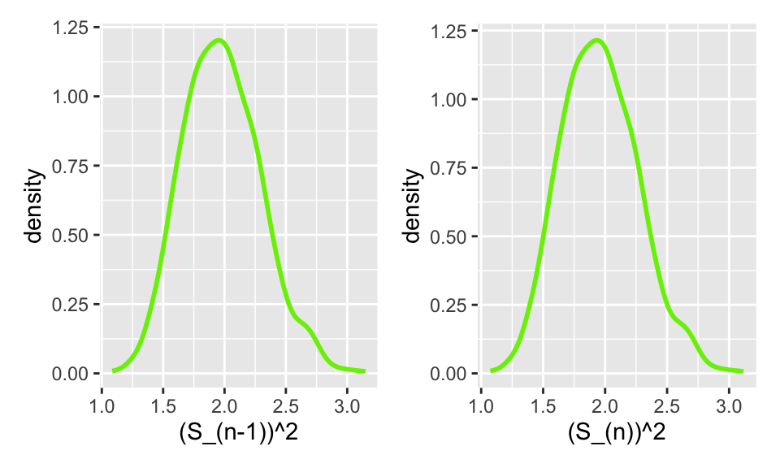
Code
n =500# normal lambda =2results_n =tibble(var=numeric(n.sims), not_var=numeric(n.sims))for(i in1:n.sims){ x =rpois(n, lambda) (results_n$var[i] =var(x) ) # variance (results_n$not_var[i] = (n-1)/n *var(x)) # the not variance - avg. squared dist from mean}
Figure 32: Density plots of the (s_n)^2 and the (s_(n-1))^2 of the Normal distribution when n = 500
I think that the distribution of \(s_{n-1}^2\) and \(s_{n}^2\) are approximately normal with large enough n.
2.4 Bootstrap
Now, take one sample from each distribution. Instead of drawing a random sample at each iteration, sample with replacement from the one sample. Produce a density plot of the \(s_{n-1}^2\) and \(s_{n}^2\). Do we get roughly the same information as we do in the full simulation? Try this over several seeds – what do you notice? Ensure to set your randomization seed.
Figure 33: Density plots of the variance and the variance *(n-1)/n of the Poisson distribution, for values of n 20, 50, 100, and 500 in ascending order.
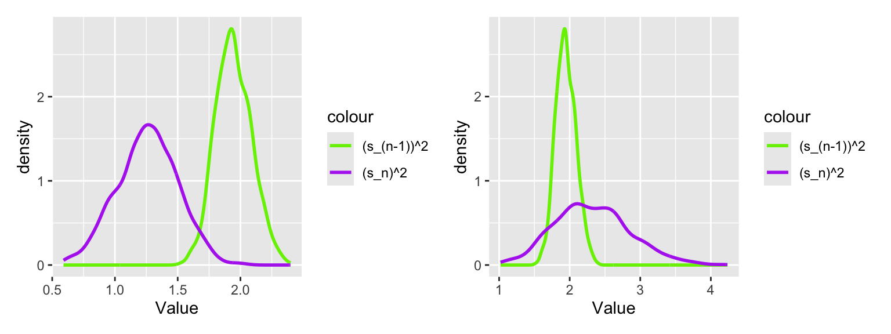
Figure 34: Density plots of the variance and the variance *(n-1)/n of the Poisson distribution, for values of n 20, 50, 100, and 500 in ascending order.
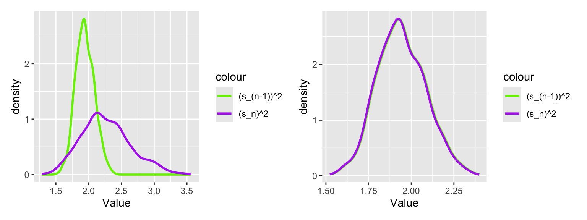
Through these plots, we can see that as n increases, the distributions of the variance and the variance *(n-1)/n become increasingly similar, and at \(n=500\) they are almost indistinguishable. This is because as n increases, the quantity \((n-1)/n\) approaches one. Interestingly, the variance appears to be the same for these values of n, just the \((s_n)^2\) changes.
Figure 35: Density plots of the variance and the variance *(n-1)/n of the Poisson distribution, for values of n 20, 50, 100, and 500 in ascending order.
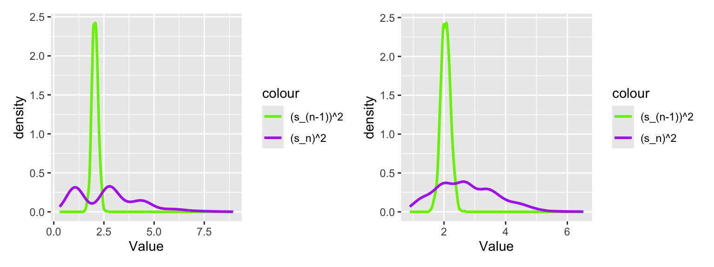
Figure 36: Density plots of the variance and the variance *(n-1)/n of the Poisson distribution, for values of n 20, 50, 100, and 500 in ascending order.
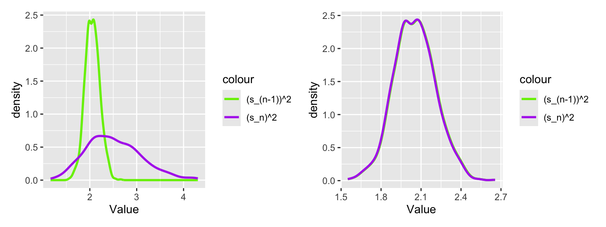
With this new seed, we can see that the variance and \((s_n)^2\) follow a similar pattern as previously, where the variance does not change with increasing n but \((s_n)^2\) does, until they become nearly indistinguishable at \(n = 500\). Notably, the graphs have a different shape compared to the last seed, showing how sampling with replacement in the bootstrap changes the observed variance.
Now we repeat this process for the remaining distributions, starting with the Binomial distribution.
Figure 37: Density plots of the variance and the variance *(n-1)/n of the Binomial distribution, for values of n 20, 50, 100, and 500 in ascending order.
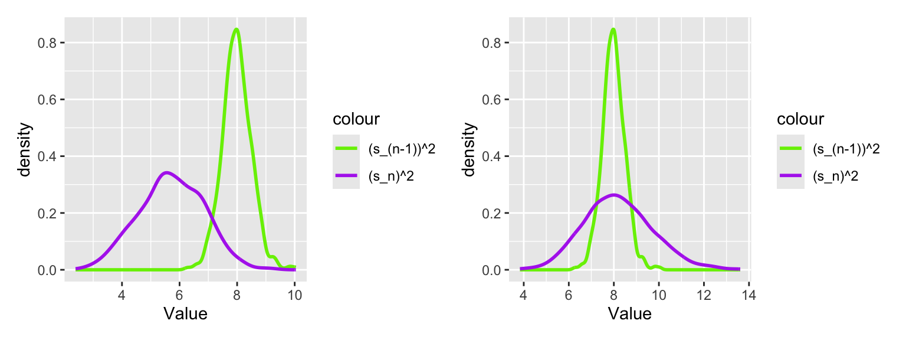
Figure 38: Density plots of the variance and the variance *(n-1)/n of the Binomial distribution, for values of n 20, 50, 100, and 500 in ascending order.
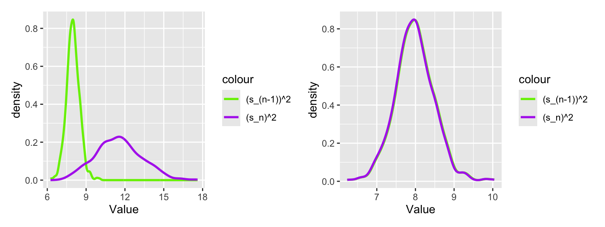
Here, we change the seed and observe any potential differences.
Figure 39: Density plots of the variance and the variance *(n-1)/n of the Binomial distribution, for values of n 20, 50, 100, and 500 in ascending order.
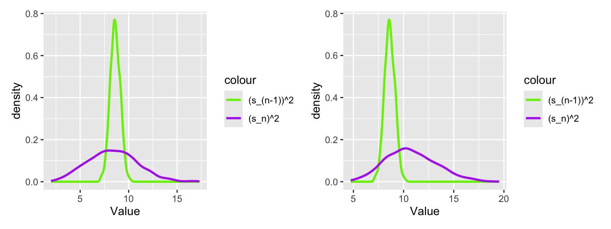
Figure 40: Density plots of the variance and the variance *(n-1)/n of the Binomial distribution, for values of n 20, 50, 100, and 500 in ascending order.
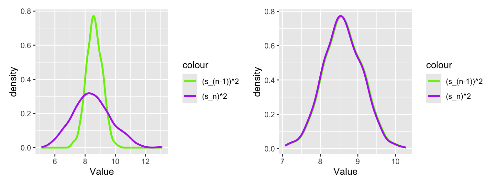
Here, in the Binomial distribution, we observe a similar phenomenon to the Poisson distribution. For different seeds, the graphs look different, but both seeds have \((s_n)^2\) becoming very similar to the variance as n increases.
Next, we perform the same thing for the Normal distribution.
Code
set.seed(7272)n =20original_sample =rnorm(n = n, mean =0, sd =sqrt(2))sample_var =var(original_sample)notvar =var(original_sample)*(n-1)/nboot_var =numeric(b)boot_notvar =numeric(b)for (i in1:b) { resample =sample(original_sample, size = n, replace =TRUE) boot_var[i] =var(resample) boot_notvar[i] =var(resample)*(n-1)/n}bootstrap_n20 =tibble(bootstrap_var = boot_var, bootstrap_notvar = boot_notvar)
Figure 41: Density plots of the variance and the variance *(n-1)/n of the Normal distribution, for values of n 20, 50, 100, and 500 in ascending order.
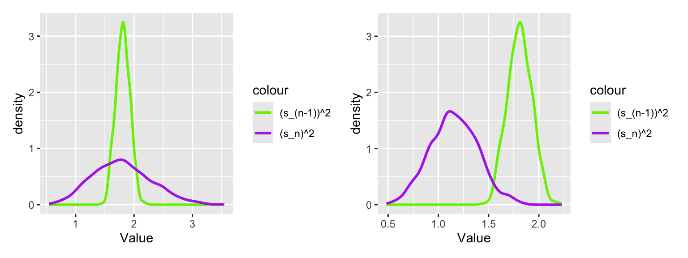
Figure 42: Density plots of the variance and the variance *(n-1)/n of the Normal distribution, for values of n 20, 50, 100, and 500 in ascending order.
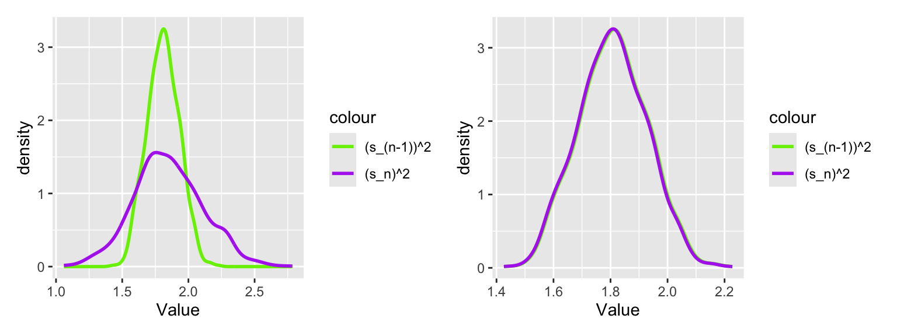
Now, we change the seed to see if a similar pattern is observed.
Code
set.seed(340)n =20original_sample =rnorm(n = n, mean =0, sd =sqrt(2))sample_var =var(original_sample)notvar =var(original_sample)*(n-1)/nboot_var =numeric(b)boot_notvar =numeric(b)for (i in1:b) { resample =sample(original_sample, size = n, replace =TRUE) boot_var[i] =var(resample) boot_notvar[i] =var(resample)*(n-1)/n}bootstrap_n20 =tibble(bootstrap_var = boot_var, bootstrap_notvar = boot_notvar)
Figure 43: Density plots of the variance and the variance *(n-1)/n of the Normal distribution, for values of n 20, 50, 100, and 500 in ascending order.
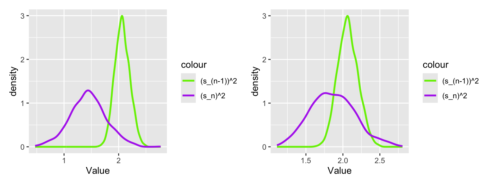
Figure 44: Density plots of the variance and the variance *(n-1)/n of the Normal distribution, for values of n 20, 50, 100, and 500 in ascending order.
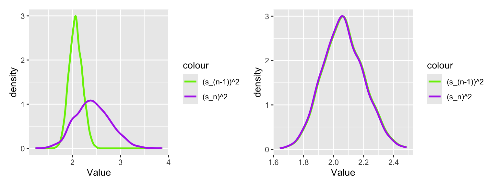
Again, the variance appears to keep its shape as n increases, while \((s_n)^2\) converges to the variance as n increases.
Lastly, we do the same for the exponential distribution.
Figure 45: Density plots of the variance and the variance *(n-1)/n of the Exponential distribution, for values of n 20, 50, 100, and 500 in ascending order.
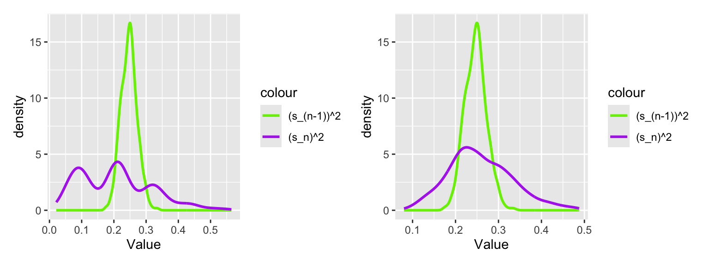
Figure 46: Density plots of the variance and the variance *(n-1)/n of the Exponential distribution, for values of n 20, 50, 100, and 500 in ascending order.
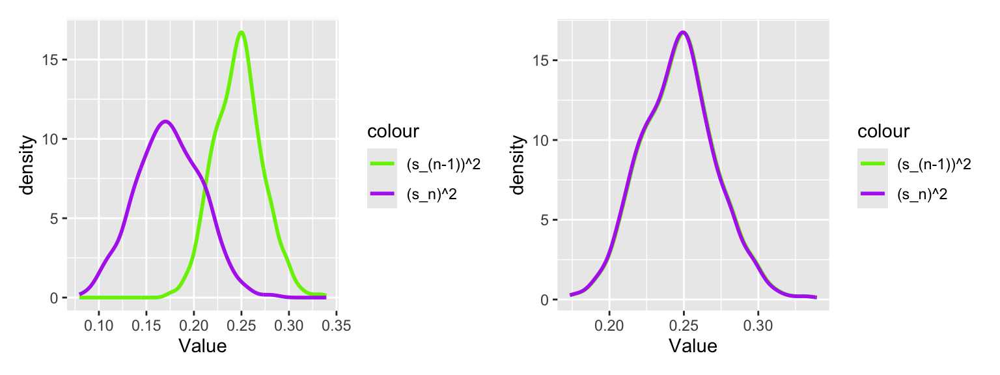
Now, we change the seed to see if a similar pattern is observed.
Figure 47: Density plots of the variance and the variance *(n-1)/n of the Exponential distribution, for values of n 20, 50, 100, and 500 in ascending order.
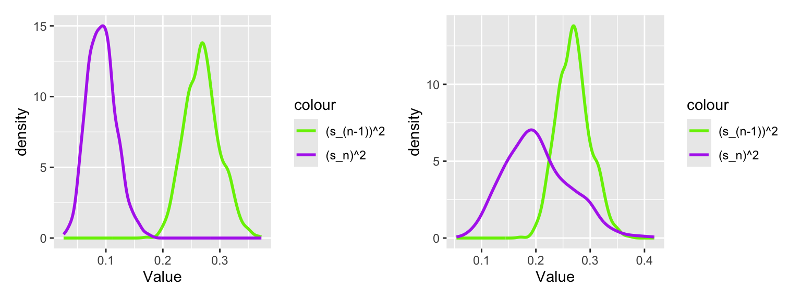
Figure 48: Density plots of the variance and the variance *(n-1)/n of the Exponential distribution, for values of n 20, 50, 100, and 500 in ascending order.
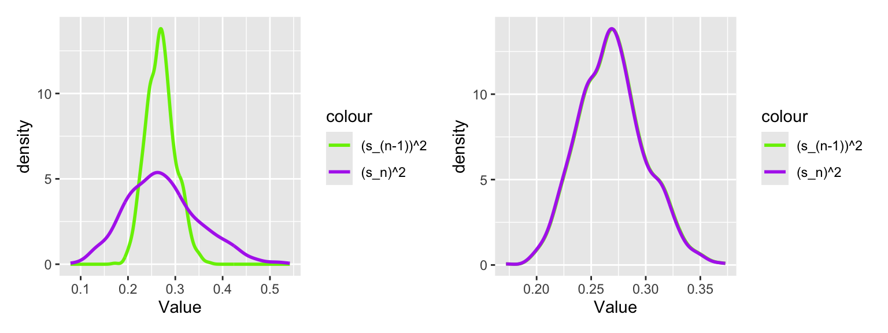
In these bootstraps, we saw through the graphs that they provide roughly the same information as with the full simulation, and as n increases \(s_{n-1}^2\) and \(s_{n}^2\) become more similar. This was the case irrespective of seed or distribution.
3 Executive Summary
Summarize the work you’ve done here to provide a brief (200-300 word) summary of the simulation and the results using your work in Lab 11. Your summary should be professional, clear, and all claims should be corroborated with statistical support.
Solution
In this lab, we compared the point estimators \[S_{n-1}^2 = \frac{1}{n-1} \sum_{i=1}^n (X_i -\bar{X})^2 \]
and \[S_n^2 = \frac{1}{n} \sum_{i=1}^n (X_i -\bar{X})^2.\].
The goal was to determine why we use \(S_{n-1}^2\) instead of \(S_n^2\), by exploring the Poisson, Binomial, Normal, and Exponential distributions. The parameters of these distributions were selected such that the true variance for all models is 2. This lets us compare the estimators to the true variance, and make judgements from there. First, we began by calculating the Bias, Precision, and Mean Square Error (MSE) for \(S_{n-1}^2\) and \(S_n^2\) within each distribution, and then changing the sample size and observing the effect. To start, when \(n=20\), \(S_{n-1}^2\) has a higher MSE, lower bias, and lower precision across all distributions when compared to \(S_n^2\). However, the mean of \(S_{n-1}^2\) is closer to the true mean of 2 than \(S_n^2\), across all distributions. As n increases, the difference in MSE, Bias, and Precision across all distributions decreases, and the mean of both distributions becomes closer to 2. When producing a density plot of \(s_{n-1}^2\) and \(s_{n}^2\), and doing so with increasing n, it is apparent that their distributions are becoming approximately normal as n increases. This was the case for all four of the distributions tested. When performing a bootstrap on each distribution, the bootstrap yielded very similar results to the full simulation. This was the case regardless of what seed was used. We can conclude that bootstrapping is an effective method, but its performance significantly improves when n is large (~500).